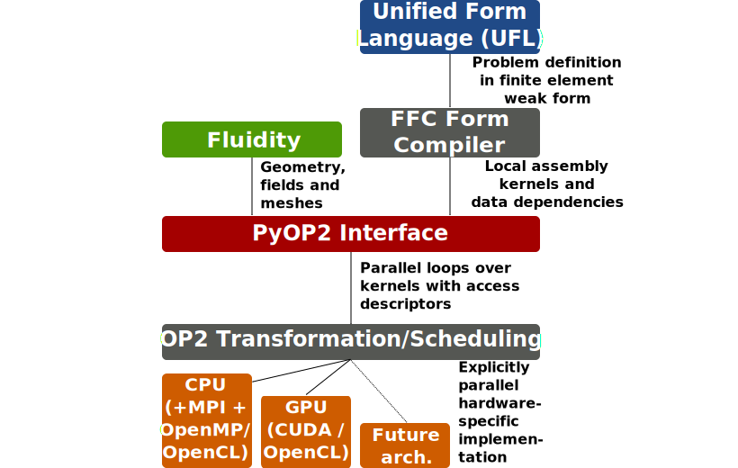
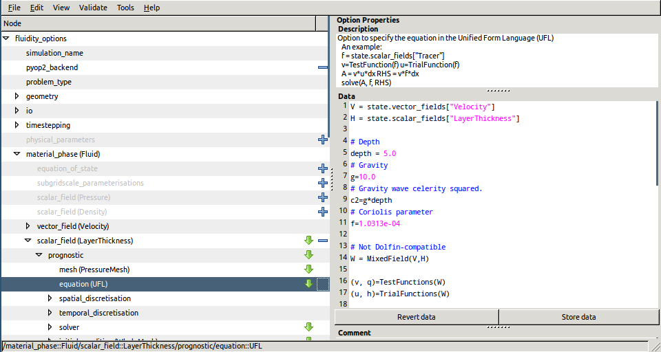
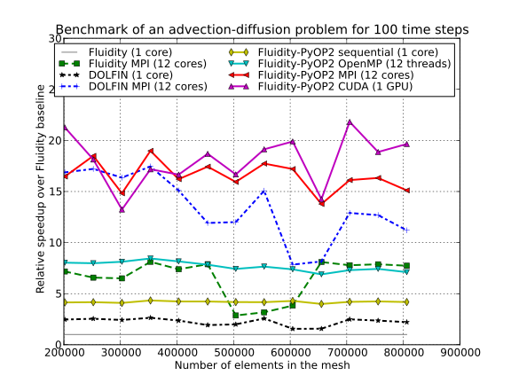
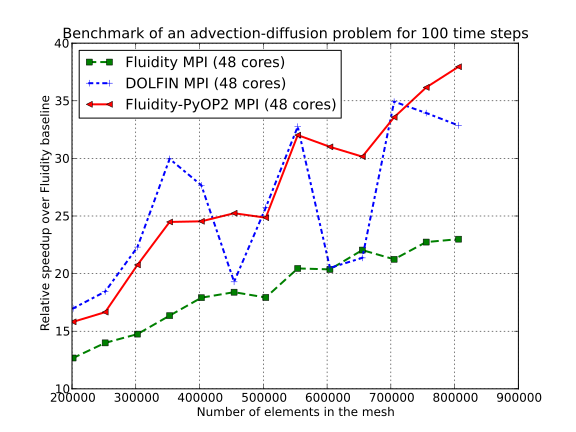
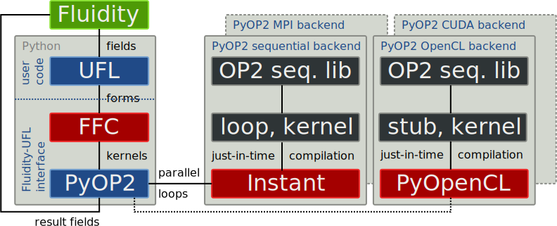

Performance Portable Finite Element Computations in Fluidity with UFL, FFC and PyOP2
Florian Rathgeber1, Graham Markall1, Lawrence Mitchell3, Nicolas Loriant1, Gheorghe-teodor Bercea1, David Ham1,2, Paul Kelly1
1 Department of Computing, Imperial College London
2 Grantham Institute for Climate Change, Imperial College London
3 EPCC, University of Edinburgh
The PyOP2-Fluidity Tool Chain

Separation of Concerns

Comparison to the FEniCS Tool Chain

Interfacing PyOP2 to Fluidity
Fluidity

- open source, general purpose, multi-phase computational fluid dynamics code
- used internationally for complex fluid tasks
- developed at AMCG at Imperial College
- XML-based configuration files with GUI editor
Interfacing PyOP2
- existing interface to access fields from Python
- additional equation type UFL alongside Fluidity's built-in equations
- user provides custom UFL code
- call PyOP2 instead of Fluidity's built-in advection-diffusion solver
- create PyOP2 data structures for accessed fields on the fly
UFL equations in Diamond

Driving PyOP2 from UFL source
Solving the advection-diffusion equation $$\frac{\partial c}{\partial t} + \nabla \cdot (\vec{u} c) = \nabla \cdot (\kappa \nabla c) + F$$
t=state.scalar_fields["Tracer"] # Coefficient(FiniteElement("CG", "triangle", 1))
u=state.vector_fields["Velocity"] # Coefficient(VectorElement("CG", "triangle", 1))
p=TrialFunction(t)
q=TestFunction(t)
diffusivity = 0.1
M = p * q * dx
d = dt * (diffusivity * dot(grad(q), grad(p)) - dot(grad(q), u) * p) * dx
a = M + 0.5 * d
L = action(M - 0.5 * d, t)
solve(a == L, t)
Finite element assembly and solve in PyOP2
What goes on behind the scenes of the solve call (simplified example!):
from pyop2 import op2, ffc_interface
def solve(equation, x):
# Generate kernels for matrix and rhs assembly
lhs = ffc_interface.compile_form(equation.lhs, "lhs")[0]
rhs = ffc_interface.compile_form(equation.rhs, "rhs")[0]
# Omitted: extract coordinates (coords), connectivity (elem_node)
# and coefficients (tracer t, velocity u)
# Construct OP2 matrix to assemble into
sparsity = op2.Sparsity((elem_node, elem_node), sparsity_dim)
mat = op2.Mat(sparsity, numpy.float64)
b = op2.Dat(nodes, 1, np.zeros(nodes.size))
# Assemble lhs, rhs and solve linear system
op2.par_loop(lhs, elements(3,3),
mat((elem_node[op2.i[0]], elem_node[op2.i[1]]), op2.INC),
coords(elem_node, op2.READ))
op2.par_loop(rhs, elements(3),
b(elem_node[op2.i[0]], op2.INC),
coords(elem_node, op2.READ),
t(elem_node, op2.READ),
u(elem_node, op2.READ))
op2.solve(mat, x, b)
Using PyOP2 for non-FEM kernels
PyOP2: performance portability for any unstructured mesh computations, not limited to FEM!
Use PyOP2 kernel for re-normalising a vector field
vec_norm_code="""
void vec_norm(double *u)
{
const double n = sqrt(u[0]*u[0]+u[1]*u[1]);
u[0] /= n;
u[1] /= n;
}
"""
vec_norm = op2.Kernel(vec_norm_code, "vec_norm")
op2.par_loop(vec_norm, nodes,
u(op2.IdentityMap, op2.RW))
Speedup relative to single core Fluidity (single 12-core node)

Speedup relative to single core Fluidity (4 12-core nodes)

Conclusions & future work
Conclusions
- Two-layer abstraction for FEM computation from UFL sources
- Decoupling of UFL (FEM) and PyOP2 (parallelisation) layers
- Performance portability for unstructured grid applications: FEM, non-FEM or combinations
Future Work
- Auto-tuning of optimisation parameters (e.g. iteration space)
- Support for curved elements
- Kernel fusion
Resources
- All the code is open source on GitHub and Launchpad
- Contact us: email mapdes@imperial.ac.uk
PyOP2
FFC
https://code.launchpad.net/~mapdes/ffc/pyop2
Fluidity
https://code.launchpad.net/~fluidity-core/fluidity/floppy_gn
Benchmarks
https://github.com/OP2/PyOP2_benchmarks
This talk
Summary: UFL equations in Fluidity
For each UFL equation in each time step:

- Shell out to Python, execute the user's UFL equation
- FFC generates local assembly kernels for FE forms
- Backend-specific JIT-compilation of kernels and calling code
- Instant for the sequential and OpenMP (including MPI)
- PyCUDA for CUDA
- PyOpenCL for OpenCL
- Agressive caching of forms, generated code and operators